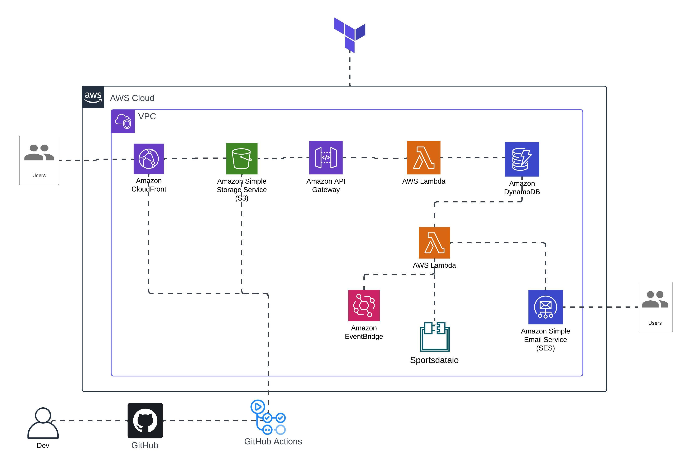
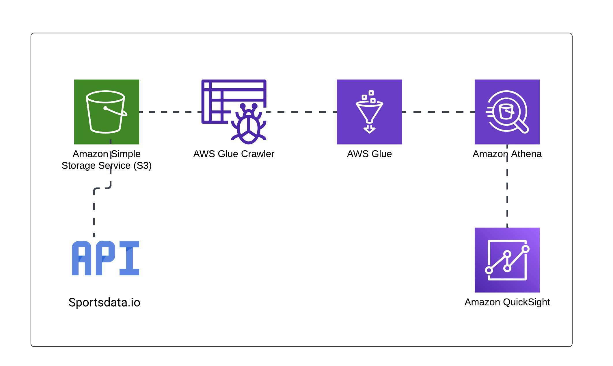

My Projects
Check out some of my work in designing and deploying cloud solutions, automating workflows, and building resilient infrastructures.
containerized NFL API
Robust cloud architecture using Terraform, AWS, ECS and Docker for scalable deployments.
View ProjectSee details about Cloud Infrastructure
Cloud Resume Challenge
This website you're currently viewing hosted on AWS, CI/CD for automated updates & Terraform for IAC.
View ProjectSee details about CI/CD Pipeline

NBA GameDay Notification Service
Real-time NBA Gameday Notification with external API and serverless Backend.
View ProjectSee details about Monitoring Dashboard

NBA Data Lake
NBA Data analytics pipeline to retrieve NBA data and analyze for actionable insights
View ProjectSee details about Container Orchestration